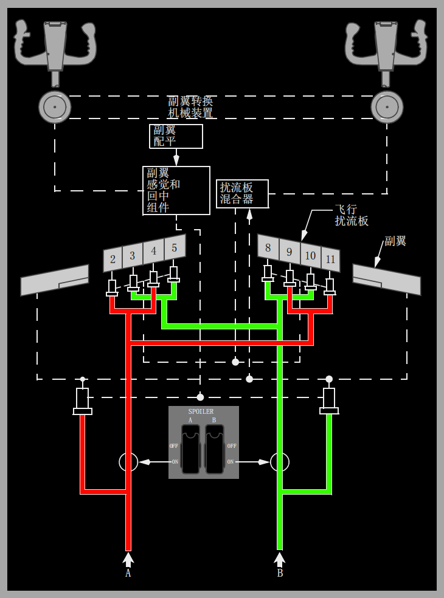
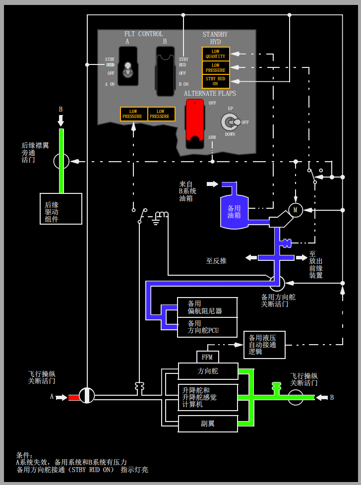

系统说明:
介绍
主飞行操纵系统使用常规的驾驶盘、驾驶杆和脚蹬，这些操纵装置与液压控制组件机械相连，指令主飞行操纵舵面，即副翼、升降舵和方向舵。
主飞行操纵系统由冗余的液压系统提供动力，即系统A和系统B。
任一液压系统都可操作所有的主飞行操纵装置。
如需要，可人工操纵副翼和升降舵。如果A系统和B系统液压不可用，方向舵可由备用液压系统操作。
次用飞行操纵，以及由后缘(TE)襟翼、前缘(LE)襟翼和缝翼(前缘装置)组成的增升装置，都由液压B系统提供动力。
当液压B系统失效时，可电动操作后缘襟翼。
某些情况下，动力转换组件(PTU)自动为前缘装置提供动力。( 动力转换组件内容下详)。这些装置也可使用备用液压放出。
飞行员操纵装置
• 两个驾驶杆
• 两个驾驶盘
• 两对方向舵脚蹬
• 减速板(SPEED BRAKE)手柄
• 襟翼(FLAP)手柄
• 安定面配平(STAB TRIM)切断电门
• 安定面配平(STAB TRIM)超控电门
• 安定面配平电门
• 安定面配平轮
• 副翼(AILERON)配平电门
• 方向舵(RUDDER)配平控制
• 偏航阻尼器(YAW DAMPER)电门
• 备用襟翼(ALTERON FLAPS)主电门
• 备用襟翼位置电门
• 飞行操纵(FLT CONTROL)电门
• 飞行扰流板(SPOILER)电门
驾驶杆和方向盘通过转换机械装置相连，使得飞行员可以旁通卡阻的操纵装置或操纵面。
两对方向舵脚蹬之间有刚性连接。
减速板(SPEED BRAKE)手柄可人工或自动地使扰流板对称操作。
飞行操纵面
以下装置提供俯仰操纵：
• 两个升降舵
• 一个可移动的水平安定面。
以下装置提供横滚操纵：
• 两个副翼
• 八块飞行扰流板。
偏航由一个方向舵操纵。
起飞时，方向舵在40到60海里/小时之间开始产生空气动力效应。
起飞、进近和着陆时，后缘襟翼、前缘襟翼和缝翼提供增强升力。
翼梢小翼可增强飞机性能，延长飞机的航程能力并提高燃油效能。
在空中，对称的飞行扰流板起到减速板的作用。
在地面，对称的飞行和地面扰流板可破坏飞机的升力以提高刹车效能
飞行扰流板
每个机翼的上表面各有四块飞行扰流板。
每个液压系统(A和B系统)向不同的扰流板提供动力以进行隔离操作，以便液压系统失效时仍可保持对称操作。
两个飞行扰流板(SPOILER)电门控制液压关断活门。
在空中和地面，飞行扰流板用作减速板以增加阻力并减小升力。
飞行扰流板也根据驾驶盘指令来协助横滚控制。
扰流板混合器与副翼钢索驱动装置相连，控制每块扰流板上的液压动力控制组件，使扰流板随副翼成比例移动。
副翼向上偏转时，机翼上的飞行扰流板升起，副翼向下时，飞行扰流板保持与翼面齐平。
当驾驶盘偏转超过约10°时，飞行扰流板开始偏转。

升降舵
升降舵提供沿飞机横轴的俯仰控制。升降舵的位置由飞行员驾驶杆控制。
A和B飞行操纵(FLT CONTROL)电门控制升降舵的液压关断活门。
飞行员的操纵杆与升降舵动力控制组件（PCU）通过钢索相连，PCU由A和B液压系统提供动力。
升降舵之间由扭矩管相互连接。
如果液压A和B系统失效，可由飞行员向前推杆和向后带杆来操纵升降舵。
由于摩擦力和空气动力载荷因素，所需操纵力会较大。
升降舵操纵杆超控机械装置
升降舵卡阻时,超控机械装置可使驾驶杆自然分离。
向卡阻的升降舵施加操纵杆力将使机长或副驾驶的驾驶杆分开。
分开后，无论哪个驾驶杆自由移动均可提供足够的升降舵控制。
尽管升降舵的整个可用行程明显减少，但其行程足够用于着陆拉平。操纵杆力要大于并超过人工恢复过程所使用的操纵杆力。
如在着陆阶段发生卡阻, 则需施加更大的操纵力以产生足够大的升降舵操纵力，用于着陆时拉平。
安定面配平可用来抵消持续的操纵杆力。
升降舵感觉系统
升降舵感觉计算机通过使用空速(来自升降舵空速管系统)和安定面位置来提供模拟的空气动力。
通过升降舵感觉和回中组件将感觉传输给驾驶杆。操纵感觉系统时，升降舵感觉计算机使用A或B液压系统的压力，取压力较大者。
当液压系统或升降舵感觉空速管系统中的任意一个失效时，升降舵感觉计算机感应到过度的液压压差，并且感觉压差(FEEL DIFF PRESS)指示灯亮。
马赫配平系统
马赫配平系统在马赫数较大时提供速度稳定性。
马赫数在.615以上，随着速度增大而调整升降舵相对于安定面的位置，自动完成马赫配平。
飞行控制计算机利用大气数据惯性基准组件(ADIRU)中的马赫数信息计算出马赫配平作动筒的位置。
马赫配平作动筒重新定位用于调节操纵杆中立位置的升降舵感觉回中组件。
速度配平系统
速度配平系统(STS)是一个速度增稳系统，其设计目的是：当自动驾驶未接通时，在全重小、重心靠后且推力大的操作条件下提高飞行性能。
STS通过指令安定面朝与速度变化相反的方向移动，使飞机返回到配平的速度。
STS监控安定面位置、推力手柄位置、空速和垂直速度的输入，然后利用自动驾驶安定面配平来配平安定面。
当飞机的速度大于或小于配平速度，则指令安定面朝一定的方向移动以使飞机回到配平速度的方向。
这将增加操纵杆力，迫使飞机返回到配平的速度。一旦飞机回到配平速度，则STS指令的安定面移动被取消。
STS的操作常用于起飞、爬升和复飞阶段。速度配平的操作条件如下所列：
• 在100节指示空速和0.60马赫之间，可完全获得STS马赫增益，达到0.68马赫时，逐步消减至零。
• 起飞后10秒
• 松开配平电门后5秒
• 自动驾驶未接通
• 感应到配平要求。
失速识别
通过偏航阻尼器、升降舵感觉转换(EFS)组件和速度配平系统加强对失速的识别和控制。
这三个系统共同工作有助于飞行员识别并防止进一步进入失速条件。
在大迎角(AOA)操作期间, 失速管理/偏航阻尼器(SMYD)可减小偏航阻尼器指令的方向舵运动。
失速期间，EFS组件可增加液压A系统向升降舵感觉和回中组件的供压。
该压力大概是操纵杆力的两倍。只要不存在抑制情况，EFS组件即预位。
抑制条件包括：
在地面，无线电高度小于100英尺，并且自动驾驶接通。
然而，当飞机下降经过100英尺无线电高度时，如果EFS工作，则它将保持工作直至迎角减小到低于大约抖杆临界值的位置。
驾驶舱内没有关于该系统正确预位或起动的指示。
当空速减小至接近失速速度时，速度配平系统配平安定面使机头向下，并使速度配平量大于抖杆器迎角。
根据这种配平计划，飞行员必须更多地带杆才会使飞机失速。
带杆时，随着EFS组件开始工作，操纵杆力也相应地增大。
偏航操纵
偏航操纵由液压驱动的方向舵和数字式偏航阻尼器系统完成。
通过方向舵脚蹬来操纵方向舵位移。
偏航阻尼功能通过失速管理/偏航阻尼器(SMYD)计算机进行控制。
方向舵(装有方向舵系统增强程序(RSEP))
方向舵提供关于沿飞机纵轴的偏航控制。
A和B飞行操纵(FLT CONTROL)电门控制方向舵和备用方向舵的液压关断活门。
每套方向舵脚蹬都由钢索机械连接到主和备用方向舵动力控制组件(PCU)的输入杆。
主PCU有两个独立的输入杆、两个独立的控制活门，以及两个分开的作动筒；
一个供A液压系统使用，一个供B液压系统使用。备用方向舵PCU由一个单独的输入杆和控制活门控制，并由备用液压系统提供动力。
三个输入杆全都有独立的卡阻超控机械装置，如果一个输入杆或下游硬件受干扰或卡阻，该机械装置可使输入指令继续传输给其它可用的输入杆。
当速度大于135海里/小时时，主PCU中的A和B的液压系统压力各减少大约25%。
在起飞后和着陆前的飞行中，该项功能可限制方向舵全程效能。
主方向舵PCU包含一个反向作用力监控器（FFM），可探测A、B作动筒之间的反向的压力（反向作用力）。
如果A或B系统输入卡阻或断开，压差探测开始。
FFM的输出使备用液压泵自动工作，备用方向舵关断活门打开为备用方向舵PCU增压，并使备用方向舵接通(STBY RUD ON)指示灯、主警戒指示灯和飞行操纵(FLT CONT)指示灯亮。
备用方向舵PCU由备用液压系统驱动。
备用液压系统在A和/或B系统压力失效后提供备用压力。
在由备用PCU提供动力时，飞行员仍能保持足够的方向舵操纵能力。可通过飞行操纵(FLT CONTROL)电门人工操纵方向舵，或采用自动方式进行操纵。
当备用方向舵液压系统增压时，琥珀色的备用方向舵接通(STBY RUD ON)指示灯亮。
起飞或着陆过程中，备用方向舵系统可通过飞行操纵电门自动增压，或通过压差监视器自动增压。
备用方向舵接通(STBY RUD ON)指示灯亮会使得信号牌面板上的主警戒指示灯和行操纵警告灯亮。

方向舵配平
位于后电子面板上的方向舵(RUDDER)配平控制电门可电动调整方向舵感觉和回中组件，使方向舵调节到中立位置。
方向舵脚蹬也相应的移动。方向舵配平(RUDDER TRIM)指示器以配平单位显示方向舵配平位置。
偏航阻尼器
偏航阻尼器系统包含一个主偏航阻尼器和一个备用偏航阻尼器两个偏航阻尼器均由失速管理/偏航阻尼器(SMYD)计算机控制。
SMYD计算机接收来自两台大气数据计算机(ADIRU)、两个驾驶盘和偏航阻尼器(YAW DAMPER)电门的输入信号。
SMYD适时地将偏航阻尼器的信号提供给主方向舵动力控制组件(PCU)或备用方向舵动力控制组件PCU。
任何一个偏航阻尼器都能够提供荷兰滚预防、阵风阻尼和转弯协调能力。
偏航阻尼器的操作不会引起方向舵脚蹬的移动。
只有主偏航阻尼器输入显示在偏航阻尼指示器上。
主和备用偏航阻尼器至方向舵的输入显示在飞行操纵舵面位置指示器的方向舵(RUDDER)显示上。
飞行员可用方向舵脚蹬或配平输入超控主或备用偏航阻尼器的输入。(根据选型稍有不同)
正常操作期间，主偏航阻尼器使用B液压系统，并由失速管理/偏航阻尼器(SMYD)计算机提供连续的系统监控。
发生下述任意状况时，偏航阻尼器(YAW DAMPER)电门自动移至OFF位，琥珀色偏航阻尼器(YAW DAMPER)指示灯亮，并且偏航阻尼器(YAW DAMPER)电门无法重置到ON位：
• SMYD感应到偏航阻尼器系统故障，
• SMYD感应到偏航阻尼器没有回应指令，
• B系统飞行控制(FLT CONTROL)电门置于关(OFF)位或备用方向舵(STBY RUD)位。
人工恢复飞行期间(液压系统A和B都失效)，两个飞行控制(FLT CONTROL)电门都置于STBY RUD位。
在此情况下，偏航阻尼器(YAW DAMPER)电门可重置到ON位，且备用液压系统为备用偏航阻尼器提供动力。
在备用偏航阻尼器工作时，驾驶盘的移动将信号传送至备用方向舵PCU使方向舵运动。
在通过人工恢复来控制副翼时，给方向舵助力使飞机偏转。
襟翼备用放出
在B液压系统失效的情况下，可用备用方式放出前缘装置，以及放出和收回后缘襟翼。
可通过两个备用襟翼电门电动操作后缘襟翼。
带护盖的备用襟翼(ALTERNATE FLAPS)主电门关闭襟翼旁通活门，以防止液压锁定襟翼驱动组件并预位备用襟翼位置电门。
备用襟翼(ALTERNATE FLAPS)位置电门控制一个可放出或收回后缘襟翼的电动马达。
在襟翼到达所需位置之前，该电门必须保持在下卡(DOWN)位 。
备用(电动)襟翼驱动系统不提供不对称或歪斜保护。
使用备用放襟翼时，由备用液压系统驱动前缘(LE)襟翼和缝翼到完全放出的位置。
在此情况下，备用襟翼(ALTERNATE FLAPS)主电门为向备用泵接通电源，
备用襟翼(ALTERNATE FLAPS)位置电门瞬时保持在压下位，使前缘装置完全放出。
Note: 前缘装置不能通过备用液压系统收起。

自动缝翼:
通常由液压系统B为自动缝翼操作提供动力。
如果从容量较高的B系统发动机驱动泵中感应到失压，则通过动力转换组件(PTU)由系统A提供备用动力源。
PTU使用A系统的压力来驱动一个液压动力泵为B系统增压，以进行自动缝翼操作。
动力转换组件
PTU的作用是在B系统发动机驱动液压泵不工作的情况下，为以正常速率操纵自动缝翼、前缘襟翼和缝翼提供所需的额外液压油量。
PTU使用A系统压力向液压马达驱动泵提供动力，从而使B系统液压油增压。
当存在下列所有情况时，PTU自动工作：
• B系统发动机驱动泵液压压力降低至限制之下
• 在空中
• 襟翼未收上/(选型)襟翼小于15但未收上。
襟翼位于1、2 和5时(选型襟翼位于1、2、5、10、15和25时)，自动缝翼功能可用，如果飞机接近失速条件，该功能将使前缘缝翼移动至完全放出位。
自动缝翼系统的设计是为了在起飞或进近着陆期间的大迎角条件下，增强飞机的失速特性。
。
当后缘襟翼选择到1至5时(选型到1至25时)，前缘缝翼在放出位置。。
当飞机接近失速角度时，在触发抖杆之前，缝翼自动开始向完全放出位置移动。。
当俯仰角度充分减小至失速临界姿态以下时，缝翼又回到放出位置。
备用液压系统
如果A和/或B系统失去压力，则备用液压系统可作为备份使用备用系统可人工或自动启动，使用单一电动马达驱动泵为以下装置提供动力：
• 反推装置
• 方向舵
• 前缘襟翼和缝翼（仅用于放出）
• 备用偏航阻尼器
人工操作
将任一飞行操纵电门置于STBY RUD位:
• 启动备用电动马达驱动泵
• 通过关闭飞行操纵关断活门切断至副翼、升降舵和方向舵的相应液压系统压力
• 打开备用方向舵关断活门
• 当备用方向舵关断活门开时，使相应的飞行操纵低压（LOW PRESSURE）指示灯不工作
• 使备用系统向方向舵和反推提供动力。
• 备用方向舵接通（STBY RUD ON）、主警戒和飞行操纵（FLT CONT）指示灯亮。
将备用襟翼（ALTERNATE FLAPS）主电门置于ARM位
• 启动备用电动马达驱动泵
• 关闭后缘襟翼旁通活门
• 预位备用襟翼位置电门
• 使备用系统向前缘襟翼、缝翼和反推提供动力。
自动操作
当存在下列情况时，自动操作开始工作：
• A或B系统失效，并且
• 襟翼伸出，并且
• 在空中，或轮速大于60kts，并且
• 飞行操纵电门A或B液压系统接通
或：
• 主动力控制组件(PCU)飞行压力监视器（FFM）跳开
自动操作：
• 启动备用电动马达驱动泵
• 打开备用方向舵关断活门
• 使备用系统向方向舵和反推提供动力。
• 备用方向舵接通（STBY RUD ON）、主警戒和飞行操纵（FLT CONT）指示灯亮。

备用液压系统泄漏
如果备用系统出现泄漏，备用油箱油量减少至零。
当备用油箱油量约剩一半时，油量低（LOW QUANTITY）指示灯亮。
B系统继续正常工作，但B系统油箱油量指示下降并稳定在大约满油量的72%左右。
液压油量指示的变化
正常操作期间，出现下列情况时液压油量指示将会改变：
• 发动机起动后，系统开始增压
• 收放起落架或前缘装置
• 长时间的巡航过程中出现冷浸。
这些变化对系统的操作几乎没有影响。
如果液压系统未正常增压，在较高高度会出现泡沫。
压力波动和相应的低压（LOW PRESSURE）指示灯闪烁时说明有泡沫存在。
主警戒（MASTER CAUTION）和液压（HYD）信号牌灯也可能瞬间亮。
扩展阅读:
以后再补充..返回面板